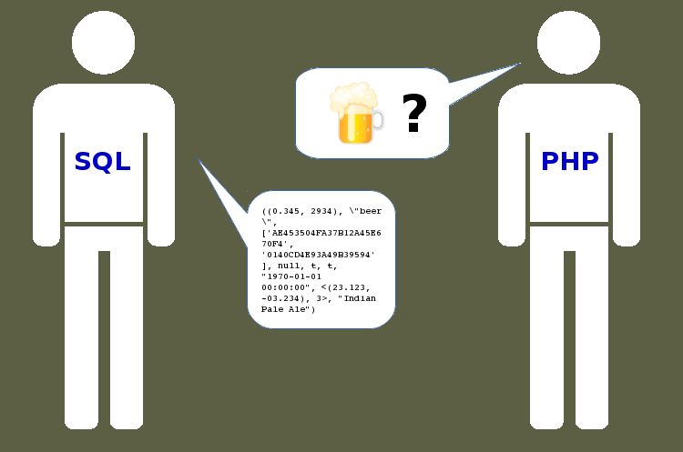
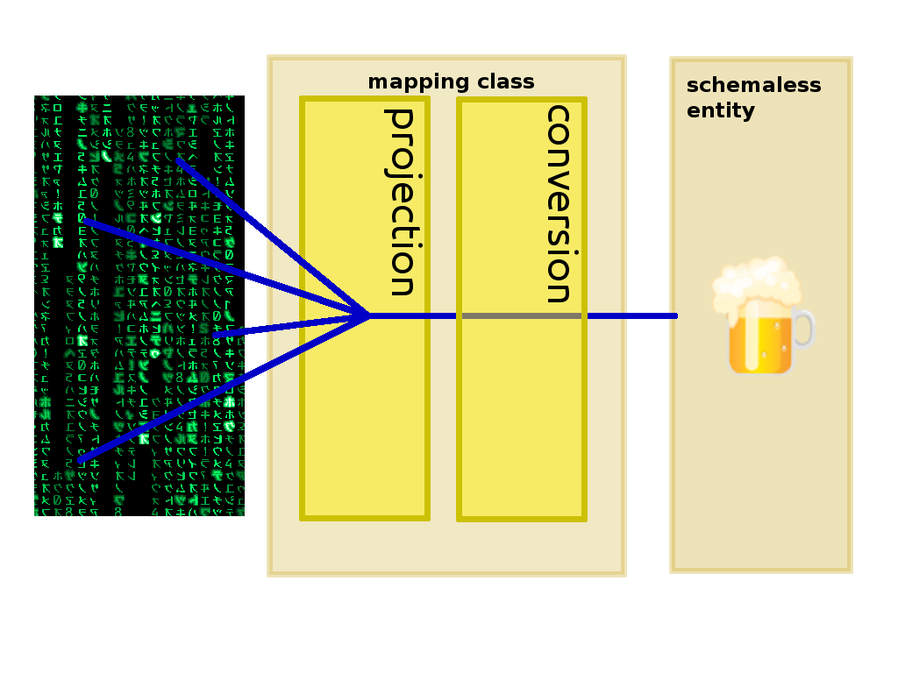
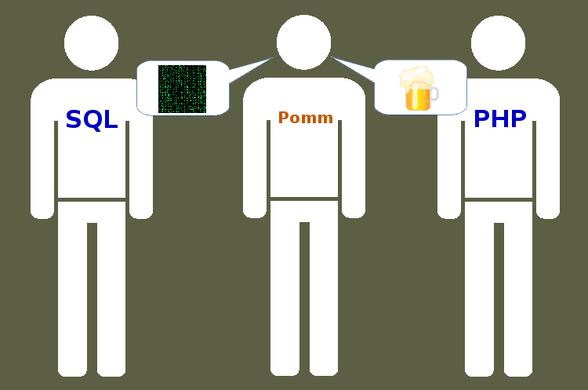

Grégoire HUBERT - PHPTour 2014


clé => entité"

Postgres FTW
("<(3,2),1>","{""2014-05-24 13:59:57.142888+00"",""2014-05-24 12:59:57.142888+00""}")
Que représente cette ligne de données ?
Comment l'exploiter ?
[t|f] <=> PHP (bool) [true|false]DateTime instancesDateInterval instances
'(1,1)'$database->registerConverter(
'Point',
new \Pomm\Converter\PgPoint(),
['point']);
\Pomm\Type\Point instance$entity->coords->x
CREATE DOMAIN latlong AS point CHECK (
value[0] <= 180 and value[0] >= -180 and
value[1] >= -90 and value[1] <= 90
);
$database
->registerConverter('LatLong', new \Pomm\Converter\PgPoint(), ['point', 'public.latlong']);
Utiles pour représenter des arbres à plat et des catégories (tags)
CREATE EXTENSION ltree;
out.restaurant.italian»['out', 'restaurant', 'italian']»Type clé => valeur
CREATE EXTENSION hstore;
'{"pika" => "chu", "plop" => "1" }'»["pika" => "chu", "plop" => "1" ]»Pour stocker des données complexes
Example: enroulements de transformateurs électriques :
CREATE TYPE winding AS (voltage numeric(5,1), current numeric(5,3));
CREATE TABLE power_supply (
-- autres champs
"primary" winding NOT NULL,
"secondaries" winding[] NOT NULL,
-- autres champs
Pour les types composites
$database->registerConverter(
'Winding',
new PgRow(
$database,
new RowStructure(['voltage' => 'numeric', 'current' => 'numeric'])
),
['transformer.winding']
);
1 <?php
2 namespace My\Database\Type;
3
4 use \Pomm\Type\Composite;
5
6 class Address extends Composite
7 {
8 public $voltage;
9 public $current;
10 }
Créer une table dans Postgres c'est créer un type composite
SELECT pika,chu FROM plop;
┌──────┬─────┐
│ pika │ chu │
├──────┼─────┤
│ a │ 1 │
│ b │ 2 │
│ c │ 3 │
└──────┴─────┘
(3 lines)
Créer une table dans Postgres c'est créer un type composite
SELECT plop FROM plop;
┌───────┐
│ plop │
├───────┤
│ (a,1) │
│ (b,2) │
│ (c,3) │
└───────┘
(3 lines)
En SQL, une projection est la liste des champs retournée par un SELECT :
SELECT
"field1" AS "fieldA",
"field2" AS "fieldB",
...
"fieldN" AS "fieldX"
FROM ...
Définir ce qui sera hydraté dans les entités « souples »
$fields = $map->getSelectFields();
[
'fieldA' => 'field1',
'fieldB' => 'field2',
...
'fieldX' => 'fieldN'
]
$student = $studentMap->findByPK(['student_id' => 3);
instance of "Student" => {
'student_id' => 3,
'first_name' => 'pika',
'last_name' => 'chu',
'birthdate' => instance of DateTime => {...
'password' => '32ªØ~ぜ',
...
}
public function getSelectFields($alias = null)
{
$fields = parent::getSelectFields($alias);
unset($fields['password']);
$fields['age'] = sprintf(
"age(%s)",
$this->aliasField('birthdate', $alias)
);
return $fields;
}
$student = $studentMap->findByPK(['student_id' => 3);
instance of "Student" => {
'student_id' => 3,
'first_name' => 'pika',
'last_name' => 'chu',
'birthdate' => instance of DateTime => {...
'age' => '17 years 3 mons 28 days'
...
}
class StudentMap extends BaseStudentMap
{
public function initialize()
{
parent::initialize();
$this->addVirtualField('age', 'interval');
}
...
$student = $studentMap->findByPK(['student_id' => 3);
instance of "Student" => {
'student_id' => 3,
'first_name' => 'pika',
'last_name' => 'chu',
'birthdate' => instance of DateTime => {...
'age' => instance of DateInterval => {...
...
}
'INSERT', 'UPDATE' and 'DELETE' peuvent également être projetés avec l'opérateur RETURNING :
DELETE FROM student
WHERE student_id = 3
RETURNING "field1" AS "fieldA", ...
$student = $studentMap->deleteByPK(['student_id' => 3);
instance of "Student" => {
'student_id' => 3,
'first_name' => 'pika',
'last_name' => 'chu',
'birthdate' => instance of DateTime => {...
'age' => instance of DateInterval => {...
...
}
public function deleteController($id)
{
$student = $this->app['pomm']
->getMapFor('\App\School\Student')
->deleteByPK(['student_id' => $id]);
if (!$student) {
return $this->app->abort("not found", 404);
}
return json_encode($student->export());
}
yes, Postgres is awesome
Cette adresses appartient elle à tel réseau ?
SELECT inet '172.17.0.2' << inet '172.16.0.0/12';
Trouver toutes les IP dans le réseau
$computers = $connection->getMapFor('Db\Network\Computer')
->findWhere('ip_address << $*', [$network]) ;
Ces 2 intervales sont il contigus ?
SELECT numrange(1.1, 2.2) -|- numrange(2.2, 3.3);
Quel est le programme TV après celui-là ?
$programs = $connection->getMapFor('Db\App\Program')
->findWhere("hours -|- tsrange(null, $*) and channel = $*", [$end_hour, $channel])
;
Quel est le point de croisement de 2 segments ?
SELECT lseg '((1,-1),(-1,1))' # lseg '((1,1),(-1,-1))';
Ces 2 segments sont ils perpendiculaires ?
SELECT lseg '((1,-1),(-1,1))' ?-| lseg '((1,1),(-1,-1))';
Un peu plus utile, la distance entre deux points ?
SELECT point '(0,0)' <-> point '(1,1)';
Les stations de vélo proches de moi ?
->getMapFor('\City\Station')
->findWhere("circle(point($*, $*), $*) @> position)", [$pos_x, $pos_y, $radius]);
Chercher des éléments
SELECT 2 = ANY(ARRAY[1, 2, 4]);
Trouver un PC à partir d'une de ses IP
$computers = $connection->getMapFor('Db\Network\Computer')
->findWhere("$* = ANY(interfaces)", [$ip_address])
;
SELECT label->en AS label FROM product;
$map->findWhere("social_networks->>$* <> ''", ['facebook']);
json_decode()Récupérer le nombre de commentaires d'un article
Je peux créer ma propre requête
public function getArticleWithComments($article_id)
{
$sql = <<<SQL
SELECT
:article_fields,
count(c.*) AS comment_count
FROM
:article_table a
LEFT JOIN :comment_table c USING (article_id)
WHERE
a.article_id = $*
GROUP BY
a.article_id
SQL;
$sql = strtr($sql, [
':article_fields' => $this->formatFieldsWithAlias('getSelectFields', 'a'),
':article_table' => $this->getTableName(),
':comment_table' => $this->connection->getMapFor('Blog\Comment')->getTableName()
]);
return $this->query($sql, [$article_id]);
}
public function getArticleWithComments($article_id)
{
$sql = <<<SQL
SELECT
:article_fields,
array_agg(c) AS comments
FROM
:article_table a
LEFT JOIN :comment_table c USING (article_id)
WHERE
a.article_id = $*
GROUP BY
a.article_id
SQL;SELECT ... FROM (SELECT ...
WITH pour faire des sous requêtesWITHSi je veux seulement les 5 derniers commentaires ?
public function getArticleWithComments($article_id)
{
$sql = <<<SQL
WITH
last_comment AS (
SELECT :comment_fields
FROM :comment_table c
WHERE c.article_id = $*
ORDER BY c.created_at DESC LIMIT 5
)
SELECT
:article_fields,
array_agg(c) AS comments
FROM :article_table a, last_comment c
WHERE a.article_id = $*
GROUP BY a.article_id
SQL;
Groupes de données sur critère
lag() et lead()rank()Déclencher des travaux détachés ?
Utiliser le mécanisme LISTEN / NOTIFY de Postgres.
public function addCommentController()
{
...
if ($comment_form->isValid())
{
$comment = $this->app['pomm']
->getMapFor('\Blog\Comment')
->createAndSaveObject($comment_form->getValues());
$this->app['pomm']
->notify('db.change', json_encode($comment->export()));

www.pomm-project.org